Introduction
This notebook covers the functionality of the Exploratory Data Analysis 1 section of the GeoDa workbook. We refer to that document for details on the methodology, references, etc. The goal of these notes is to approximate as closely as possible the operations carried out using GeoDa by means of a range of R packages.
The notes are written with R beginners in mind, more seasoned R users can probably skip most of the comments on data structures and other R particulars. Also, as always in R, there are typically several ways to achieve a specific objective, so what is shown here is just one way that works, but there often are others (that may even be more elegant, work faster, or scale better).
For this notebook, we will use socioeconomic data for 55 New York City sub-boroughs from the GeoDa website. Our goal in this lab is show how to implement exploratory data analysis methods that deal with one (univariate) and two (bivariate) variables.
Objectives
After completing the notebook, you should know how to carry out the following tasks:
Creating basic univariate plots, such as histogram and box plot
Creating a scatter plot
Implementing different smoothing methods in a scatter plot (linear, loess, and lowess)
Showing linear fits for different subsets of the data (spatial heterogeneity)
Testing the constancy of a regression slope (Chow test)
R Packages used
tidyverse: for general data wrangling (includes readr and dplyr)
ggplot2: to make statistical plots; we use this rather than base R for increased functionality and more aesthetically pleasing plots (also part of tidyverse)
ggthemes: additional themes for use with ggplot
Hmisc: contains a LOWESS smoother for ggplot
gap: to run the chow test
R Commands used
Below follows a list of the commands used in this notebook. For further details and a comprehensive list of options, please consult the R documentation.
Base R:
install.packages,library,head,names,summary,range,var,sd,pdf,dev.off,saveRDS,readRDS,function,lm,str,dimtidyverse:
read_csv,rename,mutate,if_else,filterggplot2:
ggplot,geom_histogram,bins,theme_classic,theme_minimal,xlab,ylab,ggtitle,theme,layer_data,ggsave,geom_boxplot,stat_boxplot,geom_point,coord_fixed,geom_smooth,stat_smooth,labs,scale_color_manualggthemes:
theme_tufteHmisc:
stat_plsmogap:
chow.test
Preliminaries
Before starting, make sure to have the latest version of R and of packages that are compiled for the matching version of R (this document was created using R 3.5.1 of 2018-07-02). Also, make sure to set a working directory.2 We will use a relative path to the working directory to read the data set.
Load packages
First, we load all the required packages using the library command. If you don’t have some of these in your system, make sure to install them first as well as their dependencies.3 You will get an error message if something is missing. If needed, just install the missing piece and everything will work after that. Note that ggplot2 does not need to be loaded separately since it is included in the tidyverse package collection.
library(tidyverse)## ── Attaching packages ───────────────────────────────────────────────── tidyverse 1.2.1 ──## ✔ ggplot2 3.0.0 ✔ purrr 0.2.5
## ✔ tibble 1.4.2 ✔ dplyr 0.7.6
## ✔ tidyr 0.8.1 ✔ stringr 1.3.1
## ✔ readr 1.1.1 ✔ forcats 0.3.0## ── Conflicts ──────────────────────────────────────────────────── tidyverse_conflicts() ──
## ✖ dplyr::filter() masks stats::filter()
## ✖ dplyr::lag() masks stats::lag()library(ggthemes)
library(Hmisc)## Loading required package: lattice## Loading required package: survival## Loading required package: Formula##
## Attaching package: 'Hmisc'## The following objects are masked from 'package:dplyr':
##
## src, summarize## The following objects are masked from 'package:base':
##
## format.pval, unitslibrary(gap)## gap version 1.1-22Obtaining the data
The data to implement the operations in this workbook are contained in NYC Data on the GeoDa support web site. After the file is downloaded, it must be unzipped (e.g., double click on the file). The nyc folder should be moved to the current working directory for the path names we use below to work correctly.
Creating an initial data frame
We use the tidyverse function read_csv to read the data into a data frame nyc.data. We could also have used the base R read.csv, but read_csv is a bit more robust and creates a tibble, a data frame with some additional information. As usual, we check the contents of the data frame with a head command.
nyc.data <- read_csv("nyc/nyc.csv")## Parsed with column specification:
## cols(
## .default = col_double(),
## bor_subb = col_integer(),
## NAME = col_character(),
## CODE = col_integer(),
## SUBBOROUGH = col_character(),
## RENT2002 = col_integer(),
## RENT2005 = col_integer(),
## RENT2008 = col_integer()
## )## See spec(...) for full column specifications.head(nyc.data)## # A tibble: 6 x 34
## bor_subb NAME CODE SUBBOROUGH FORHIS06 FORHIS07 FORHIS08 FORHIS09
## <int> <chr> <int> <chr> <dbl> <dbl> <dbl> <dbl>
## 1 501 Nort… 501 North Sho… 37.1 34.0 27.4 29.3
## 2 502 Mid-… 502 Mid-Island 28.0 18.1 24.0 31.2
## 3 503 Sout… 503 South Sho… 10.7 12.1 9.69 14.7
## 4 401 Asto… 401 Astoria 52.1 54.0 54.7 47.8
## 5 402 Sunn… 402 Sunnyside… 62.7 69.4 67.1 58.3
## 6 403 Jack… 403 Jackson H… 68.5 68.5 66.5 69.2
## # ... with 26 more variables: FORWH06 <dbl>, FORWH07 <dbl>, FORWH08 <dbl>,
## # FORWH09 <dbl>, HHSIZ1990 <dbl>, HHSIZ00 <dbl>, HHSIZ02 <dbl>,
## # HHSIZ05 <dbl>, HHSIZ08 <dbl>, KIDS2000 <dbl>, KIDS2005 <dbl>,
## # KIDS2006 <dbl>, KIDS2007 <dbl>, KIDS2008 <dbl>, KIDS2009 <dbl>,
## # RENT2002 <int>, RENT2005 <int>, RENT2008 <int>, RENTPCT02 <dbl>,
## # RENTPCT05 <dbl>, RENTPCT08 <dbl>, PUBAST90 <dbl>, PUBAST00 <dbl>,
## # YRHOM02 <dbl>, YRHOM05 <dbl>, YRHOM08 <dbl>Making the variable names compatible
Note, that in contrast to GeoDa (where the dbf file is read), reading the csv file into a data frame results in almost all the variable names being in caps. We confirm this with a names command:
names(nyc.data)## [1] "bor_subb" "NAME" "CODE" "SUBBOROUGH" "FORHIS06"
## [6] "FORHIS07" "FORHIS08" "FORHIS09" "FORWH06" "FORWH07"
## [11] "FORWH08" "FORWH09" "HHSIZ1990" "HHSIZ00" "HHSIZ02"
## [16] "HHSIZ05" "HHSIZ08" "KIDS2000" "KIDS2005" "KIDS2006"
## [21] "KIDS2007" "KIDS2008" "KIDS2009" "RENT2002" "RENT2005"
## [26] "RENT2008" "RENTPCT02" "RENTPCT05" "RENTPCT08" "PUBAST90"
## [31] "PUBAST00" "YRHOM02" "YRHOM05" "YRHOM08"We now use the tidyverse rename function to turn the all-caps variables into lower case for the examples we will use. As in the GeoDa workbook, we only use three variables, kids2009, kids2000, and pubast00.
nyc.data <- nyc.data %>% rename("kids2009" = "KIDS2009", "kids2000" = "KIDS2000",
"pubast00" = "PUBAST00")
names(nyc.data)## [1] "bor_subb" "NAME" "CODE" "SUBBOROUGH" "FORHIS06"
## [6] "FORHIS07" "FORHIS08" "FORHIS09" "FORWH06" "FORWH07"
## [11] "FORWH08" "FORWH09" "HHSIZ1990" "HHSIZ00" "HHSIZ02"
## [16] "HHSIZ05" "HHSIZ08" "kids2000" "KIDS2005" "KIDS2006"
## [21] "KIDS2007" "KIDS2008" "kids2009" "RENT2002" "RENT2005"
## [26] "RENT2008" "RENTPCT02" "RENTPCT05" "RENTPCT08" "PUBAST90"
## [31] "pubast00" "YRHOM02" "YRHOM05" "YRHOM08"Analyzing the Distribution of a Single Variable
We follow the discussion in the GeoDa workbook and start with the common univariate descriptive graphs, the histogram and box plot. Before covering the specifics, we provide a brief overview of the principles behind the ggplot operations.
Note that linking and brushing between a plot and a map is not (yet) readily implemented in R, so that our discussion will focus primarily on static graphs.
A quick introduction to ggplot
We will be using the commands in the ggplot2 package for the descriptive statistics plots. There are many options to create nice looking graphs in R, including the functionality in base R, but we chose ggplot2 for its clean logic and its similarity to the tmap package that we already encountered (in fact, tmap uses the same layered logic as ggplot).4
An in-depth introduction to ggplot is beyond our scope, but a quick overview can be found in the Data Visualization chapter of Wickham and Grolemund’s R for Data Science book, and full details are covered in Wickham’s ggplot2: elegant graphics for data analysis (2nd Edition) (Springer Verlag, 2016).
The logic behind ggplot is an implementation of Wilkinson’s grammar for graphics, using the concept of layers. These are the components that make up a plot, such as a data set, aesthetic mappings (variables for different aspects of the graph, such as the x and y-axes, colors, shapes, etc.), statistical transformations, a geometric object and position adjustments. Several layers can be drawn on top of each other, providing the ability to create incredibly complext graphs.
For now, the main parts to concentrate on are the data set and the aesthetics, or aes. The latter are typically (at least) the variables to be plotted. These are usually declared in the main ggplot command, e.g., ggplot(dataset,aes(x=var1,y=var2)) and apply to all the following layers. However, they can also be specified for each layer individually.
Next follow one or more geometric objects, geom_* and various adjustments, added to the first command by means of a plus sign, just as we saw how a tmap choropleth map was constructed.
The terminology may seem a little unfamiliar at first, but as long as you remember that aes are the variables and the geom_* are the plot types, you will be on your way.
Histogram
We start with the simple histogram command. As in the GeoDa workbook, we will use the kids2009 variable.
The geom for a histogram is geom_histogram. In contrast to most plots in ggplot, only one variable needs to be passed. The general setup for ggplot is to think of the graph as a two-dimensional representation, with the x variable for the x axis and the y variable for the y-axis. In a histogram, the vertical axis is by default taken to be the count of the observations in each bin.5
The three pieces we need to create the plot are the data set (data), nyc.data, the aesthetic (aes), kids2009, and the geom, geom_histogram. The command is as follows, with all the other settings left to their default:
ggplot(data=nyc.data,aes(kids2009)) +
geom_histogram()## `stat_bin()` using `bins = 30`. Pick better value with `binwidth`.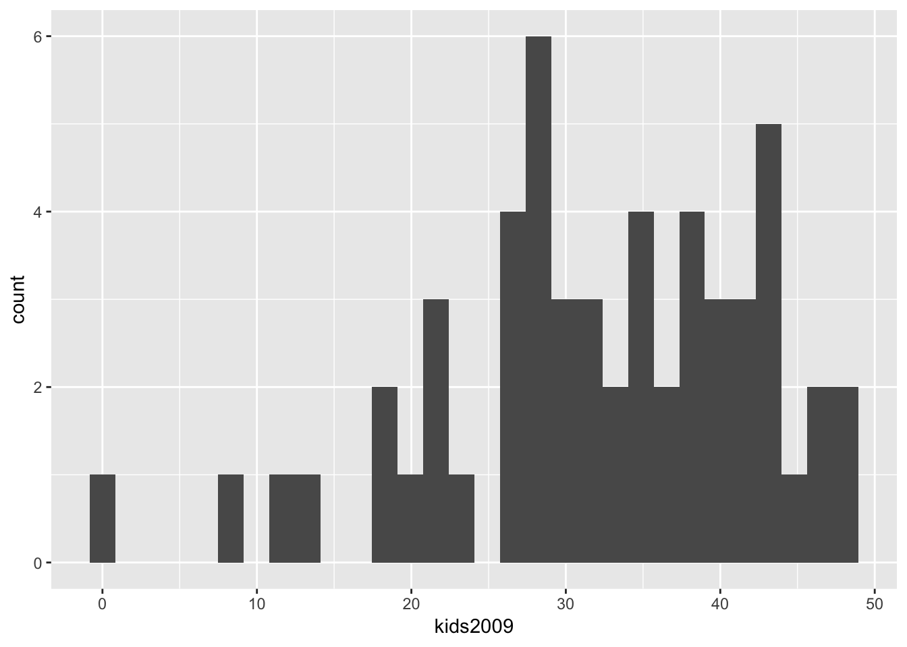
The resulting histogram is not very informative, and the first thing we will do is heed the warning to pick a better bin width.
Selecting the number of histogram bins
The standard way in ggplot is to adjust the number of bins indirectly, by means of the binwidth option, i.e., the range of values that make up a bin, in the units of the variable under consideration. To keep the parallel with the GeoDa workbook, we instead use the option bins, which sets the number of bins directly. The resulting histogram now matches the one in GeoDa (except for the lack of color, which is immaterial).
ggplot(data=nyc.data,aes(kids2009)) +
geom_histogram(bins=7)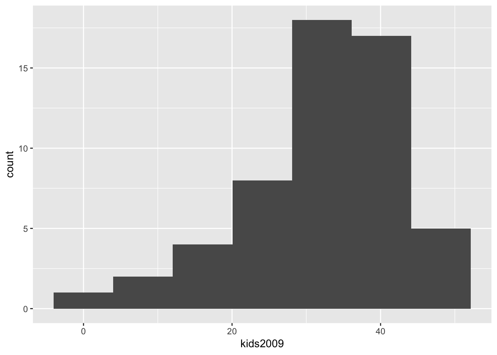
As in the GeoDa workbook, we can now change the number of bins to 5, which yields the following histogram.
ggplot(data=nyc.data,aes(kids2009)) +
geom_histogram(bins=5)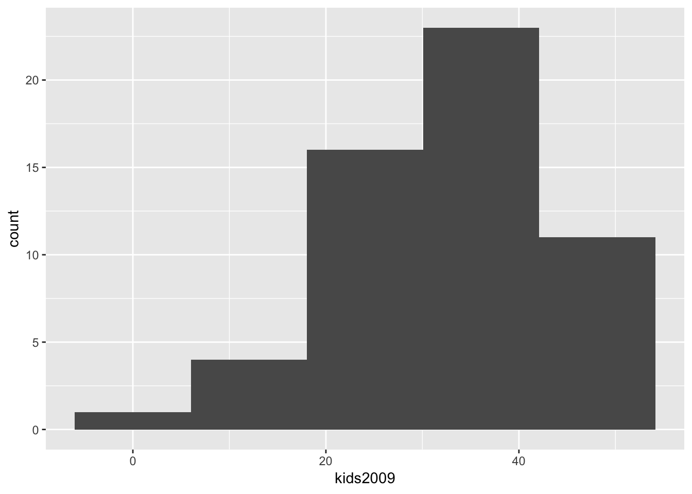
Spiffing up the graph
The graph as shown is just rudimentary. There are many options in ggplot to change the appearance of the graph, too many to cover here. But to illustrate some basic features, below, we add a label for the x and y axes using xlab and ylab, and a title for the graph with ggtitle. An unfortunate aspect of the latter is that it left aligns the text, whereas we would typically want it to be centered over the graph.
We can adjust this using the very powerful theme option. But first the basics. Every graph has a theme, which sets the main parameters for its appearance. The default theme with the grey grids, separated by white lines is theme_grey( ). If we want to change this, we can specify one of the other themes. For example, a classic graph a la base R plot, without background shading or grid lines is theme_classic( ). In order to obtain this specialized look, we set the associated theme command. Our histogram in this theme looks as follows, with a label on the x and y axis, and a title (and back to 7 bins).
ggplot(data=nyc.data,aes(kids2009)) +
geom_histogram(bins=7) +
xlab("Percent kids in 2009") +
ylab("Frequency") +
ggtitle("Example Histogram") +
theme_classic()There are seven built-in themes as well as several contributed ones. Another built-in example is theme_minimal( ), shown next.
ggplot(data=nyc.data,aes(kids2009)) +
geom_histogram(bins=7) +
xlab("Percent kids in 2009") +
ylab("Frequency") +
ggtitle("Example Histogram") +
theme_minimal()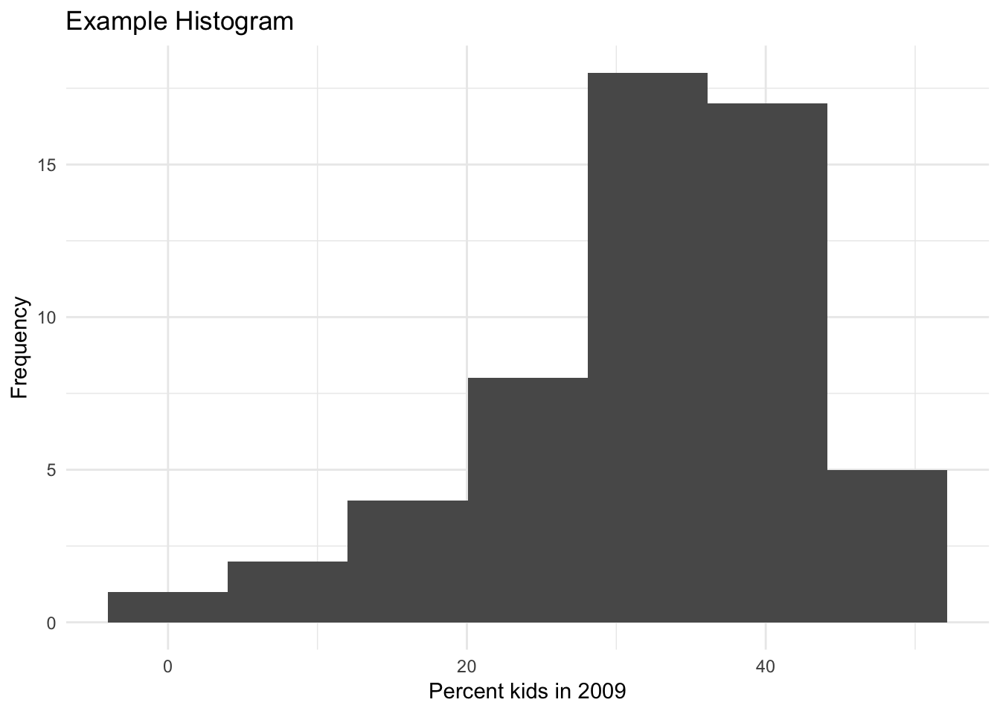
In addition, the package ggthemes contains several additional themes that look extremely professional. For example, theme_tufte( ).
ggplot(data=nyc.data,aes(kids2009)) +
geom_histogram(bins=7) +
xlab("Percent kids in 2009") +
ylab("Frequency") +
ggtitle("Example Histogram") +
theme_tufte()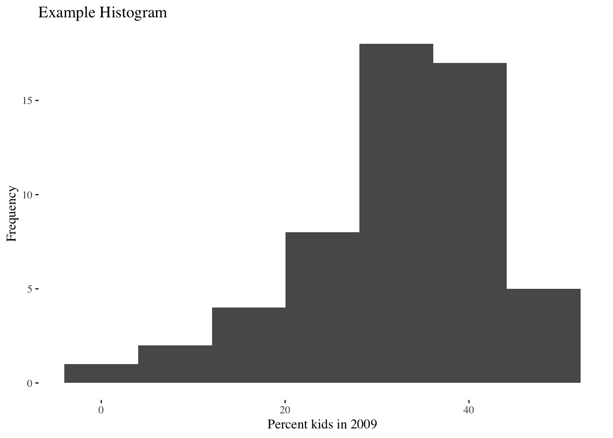
Besides selecting a different default theme, we can also override the basic settings associated with the current theme. For example, we adjust the plot.title (of course, you need to know what everything is called). Specifically, we set the element_text property’s horizontal justification (hjust) to 0.5. This centers the title. The number of other refinements is near infinite. Again, using the default theme_grey( ):
ggplot(data=nyc.data,aes(kids2009)) +
geom_histogram(bins=7) +
xlab("Percent kids in 2009") +
ylab("Frequency") +
ggtitle("Example Histogram") +
theme(plot.title = element_text(hjust = 0.5))
Histogram summary statistics
The histogram in GeoDa has an option to display the contents of each bin as well as some descriptive statistics.
As anything in R, the plot created by ggplot is nothing but an object. When we enter the commands as above, starting with ggplot, the result is drawn directly to the screen. But we can also assign the plot object to a variable. This variable will then contain all the information needed to draw the graph, which includes the count of observations in each bin, the min and max values for each bin, etc. For example, we can assign our histogram plot to the plot.data object, and then extract the information using the layer_data function. The result is a data frame.
plot.data <- ggplot(data=nyc.data,aes(kids2009)) +
geom_histogram(bins=7) +
xlab("Percent kids in 2009") +
ylab("Frequency") +
ggtitle("Example Histogram") +
theme(plot.title = element_text(hjust = 0.5))
layer_data(plot.data)## y count x xmin xmax density ncount ndensity PANEL
## 1 1 1 0.0000 -4.0109 4.0109 0.002266551 0.05555556 0.05555556 1
## 2 2 2 8.0218 4.0109 12.0327 0.004533102 0.11111111 0.11111111 1
## 3 4 4 16.0436 12.0327 20.0545 0.009066204 0.22222222 0.22222222 1
## 4 8 8 24.0654 20.0545 28.0763 0.018132407 0.44444444 0.44444444 1
## 5 18 18 32.0872 28.0763 36.0981 0.040797917 1.00000000 1.00000000 1
## 6 17 17 40.1090 36.0981 44.1199 0.038531366 0.94444444 0.94444444 1
## 7 5 5 48.1308 44.1199 52.1417 0.011332755 0.27777778 0.27777778 1
## group ymin ymax colour fill size linetype alpha
## 1 -1 0 1 NA grey35 0.5 1 NA
## 2 -1 0 2 NA grey35 0.5 1 NA
## 3 -1 0 4 NA grey35 0.5 1 NA
## 4 -1 0 8 NA grey35 0.5 1 NA
## 5 -1 0 18 NA grey35 0.5 1 NA
## 6 -1 0 17 NA grey35 0.5 1 NA
## 7 -1 0 5 NA grey35 0.5 1 NAThe convention used to create the histogram in ggplot is slightly different from that in GeoDa, hence small differences in the bounds of the bins. The summary statistics give the number of observations in each bin (count), the mid-point of the bin (x), and the lower and upper bound for the bin (xmin and xmax). Unlike GeoDa, where the histogram starts at the minimum value and ends at the maximum value, the histogram in ggplot starts with the minimum value at the mid-point of the lowest bin, and the maximum value at the mid-point of the upper bin.
Assigning (part of) a graph to an object
Any subset of ggplot commands can be assigned to an object, which can save on some typing if the same data set and variables are used for several plots. For example, we assign the main ggplot command with the geom_histogram to the object baseplt. As such, this does not draw anything. Next, we add the different options to the baseplt object, and the graph appears.
baseplt <- ggplot(data=nyc.data,aes(kids2009)) +
geom_histogram(bins=7)
baseplt +
xlab("Percent kids in 2009") +
ylab("Frequency") +
ggtitle("Example Histogram") +
theme(plot.title = element_text(hjust = 0.5))
Other descriptive statistics
The usual descriptive statistics can be displayed by means of the base R summary command. In principle, we could assign these to an object and then add them to the plot using the geom_text geom, but that is beyond the current scope. We can easily obtain the descriptive statistics provided by GeoDa that are not contained in the R summary command, by means of range, var, and sd, for the range, variance and standard deviation.
summary(nyc.data$kids2009)## Min. 1st Qu. Median Mean 3rd Qu. Max.
## 0.00 26.69 33.53 32.07 39.68 48.13range(nyc.data$kids2009)## [1] 0.0000 48.1308var(nyc.data$kids2009)## [1] 107.535sd(nyc.data$kids2009)## [1] 10.36991Writing the graph to a file
In our discussion so far, the graphs are drawn to the screen and then disappear. To save a ggplot graph to a file for publication, there are two ways to proceed. One is the classic R approach, in which first a device is opened, e.g., by means of a pdf command, then the plot commands are entered, and finally the device is turned off by means of dev.off().
Note that it is always a good idea to specify the dimension of the graph (in inches). If not, the results can be unexpected.
pdf("hist.pdf",height=3,width=3)
ggplot(data=nyc.data,aes(kids2009)) +
geom_histogram(bins=7) +
xlab("Percent kids in 2009") +
ylab("Frequency") +
ggtitle("Example Histogram") +
theme(plot.title = element_text(hjust = 0.5))
dev.off()## quartz_off_screen
## 2In addiiton to the standard R approach, ggplot also has the ggsave command, which does the same thing. It requires the name for the output file, but derives the proper format from the file extension. For example, an output file with a png file extension will create a png file, and similarly for pdf, etc.
The second argument specifies the plot. It is optional, and when not specified, the last plot is saved. Again, it is a good idea to specify the width and height (in inches). In addition, for raster files, the dots per inch (dpi) can be set as well. The default is 300, which is fine for most use cases, but for high resolution graphs, one can set the dpi to 600, as in the example below.
hist.plot <- ggplot(data=nyc.data,aes(kids2009)) +
geom_histogram(bins=7) +
xlab("Percent kids in 2009") +
ylab("Frequency") +
ggtitle("Example Histogram") +
theme(plot.title = element_text(hjust = 0.5))
ggsave("hist.png",plot=hist.plot,width=3,height=3,dpi=600)Saving the graph object
An alternative approach to keep a plot object is to assign the plot commands to a variable and then save this to disk, using the standard R command saveRDS. This can later be brought back into an R session using readRDS. To save the plot, we need to specify a file name with an .rds file extension.
saveRDS(hist.plot,"hist.rds")At some later point (or in a different R session), we can then read the object and plot it. Note that we do not need to assign it to the same variable name as before. For example, here we call the graph object newplot.
newplot <- readRDS("hist.rds")
newplot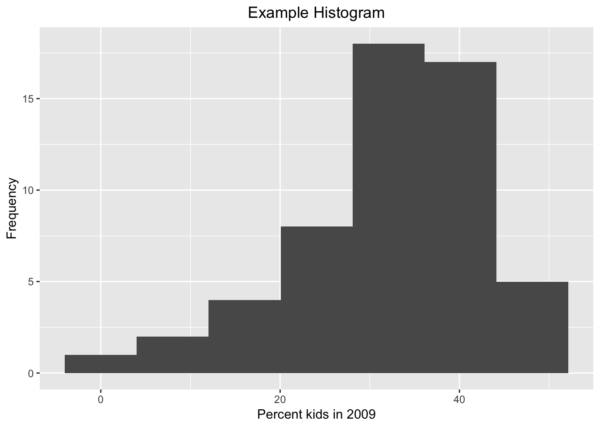
Box plot
The box plot, also referred to as Tukey’s box and whisker plot, is an alternative way to visualize the distribution of a single variable, with a focus on descriptive statistics such as quartiles and the median.6 We continue our example using the kids2009 variable. We first consider the default option, then move on to various optional settings.
Default settings
The minimal arguments to create a boxplot are the data set and the x and y variables passed to aes. As mentioned above, the logic behind the graphs in ggplot is two-dimensional, so both x and y need to be specified. The x variable is used to create separate box plots for different subsets of the data. In our simple example, we don’t need this feature, so we set the x variable to empty, i.e., " “. The y variable is the actual variable of interest, kids2009. The resulting graph is shown below.
ggplot(data=nyc.data,aes(x="",y=kids2009)) +
geom_boxplot()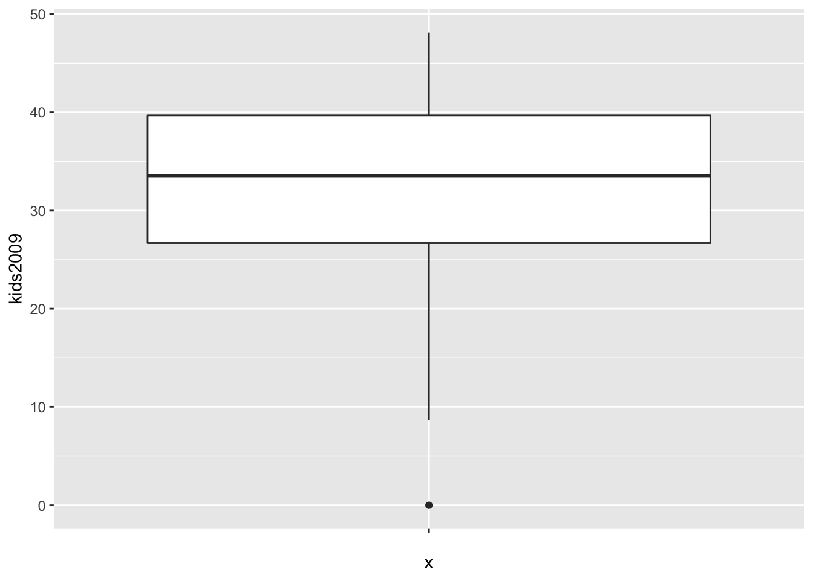
The box encloses the first and third quartile and shows the median as a thick horizontal bar. The vertical lines show the range of data, not the extent of the fences, as is the case in GeoDa. The single dot at value 0 is the lower outlier.
Box plot statistics
Unlike what is the case in GeoDa, there is no straightforward way to show the descriptive statistics on the graph. However, we can access the statistics, extract them, and then use text labeling techniques to add them to the plot. We will not pursue that here, but we will illustrate the type of statistics associated with the box plot.
As we did for the histogram, we will assign the ggplot object to a variable and then use the layer_data function to extract the information.
box.plt <- ggplot(data=nyc.data,aes(x="",y=kids2009)) +
geom_boxplot()
box.dta <- layer_data(box.plt)
box.dta## ymin lower middle upper ymax outliers notchupper notchlower x
## 1 8.6623 26.69425 33.5284 39.6773 48.1308 0 36.2944 30.7624 1
## PANEL group ymin_final ymax_final xmin xmax xid newx new_width weight
## 1 1 1 0 48.1308 0.625 1.375 1 1 0.75 1
## colour fill size alpha shape linetype
## 1 grey20 white 0.5 NA 19 solidThe result is a data frame that contains all the information needed to create the graph.
The descriptive statistics require a little clarification. The values for lower and upper are, respectively, the values for the first and third quartile, and middle is the median. ymin (8.6623) and ymax (48.1308) are not the smallest and largest values overall, but the smallest and largest values that fall inside the fences.7 They are the begin and end points of the vertical lines in the plot. outliers contains a list with the outlier values. In our example, there is just one, the value 0 (compare to Figure 18 in the GeoDa workbook). The fences, also sometimes called whiskers, are not contained among the statistics, but they can be easily computed.
We illustrate a simple function to accomplish this (note that this function does not implement any error checking and is purely illustrative of the concepts involved). As anything else in R, a function is an object that is assigned to a name. It takes arguments and returns the result. For example, the function box.desc given below takes the layer_data object as the argument box.lyr, extracts the quartiles to compute the interquartile range and to calculate the fences. We also pass the multiplier as mult, with a default value of 1.5 (the default value is set by the equal sign).
box.desc <- function(box.lyr,mult=1.5) {
# function to computer lower and upper fence in a box plot
# box.lyr: a box plot layer_data object
# mult: the multiplier for the fence calculation, default = 1.5
iqr <- box.lyr$upper - box.lyr$lower # inter-quartile range
upfence <- box.lyr$upper + mult * iqr # upper fence
lofence <- box.lyr$lower - mult * iqr # lower fence
return(c(lofence,upfence))
}We can now pass the box.dta results to this function to obtain the lower and upper fences.
box.desc(box.dta)## [1] 7.219675 59.151875These results match the values in the GeoDa workbook.
Changing the fence
As we did in the GeoDa workbook, we can change the multiplier value to compute the fences. The default is 1.5, but we can set this to 3.0 by means of the coef option. We again assign the plot to an object to both illustrate the graph and the associated statistics.
box.plt3 <- ggplot(data=nyc.data,aes(x="",y=kids2009)) +
geom_boxplot(coef=3)
box.plt3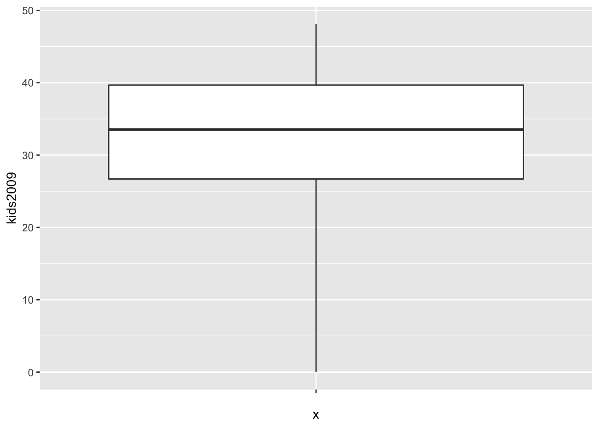
As in the GeoDa example, there are no longer any outliers. In the graph, the lowest point on the vertical line now corresponds with the value of 0.
We extract the statistics as before.
box.dta3 <- layer_data(box.plt3)
box.dta3## ymin lower middle upper ymax outliers notchupper notchlower x
## 1 0 26.69425 33.5284 39.6773 48.1308 36.2944 30.7624 1
## PANEL group ymin_final ymax_final xmin xmax xid newx new_width weight
## 1 1 1 0 48.1308 0.625 1.375 1 1 0.75 1
## colour fill size alpha shape linetype
## 1 grey20 white 0.5 NA 19 solidThe statistics are the same, except that the value for ymin is now 0. We double check the results for the fences using our function box.desc, but now pass box.dta3 and set mult=3.0.
box.desc(box.dta3,mult=3.0)## [1] -12.25490 78.62645Since the lower fence is negative, the value of 0 is no longer an outlier.
Fancier options
As is, the default box plot is pretty rudimentary. We will illustrate the power of ggplot by adding a number of features to the plot in order to mimic the visual representation given in GeoDa. First, we will remove the label for the x-axis by setting it to “”, and add a title using ggtitle. As we did for the histogram, we will center the title over the graph. To save on some typing, we will assign the ggplot command with its arguments to the variable base.plt and then build the graph by adding layers. First, just the labels.
base.plt <- ggplot(data=nyc.data,aes(x="",y=kids2009))
base.plt + geom_boxplot() +
xlab("") +
ggtitle("Example Box Plot") +
theme(plot.title = element_text(hjust=0.5))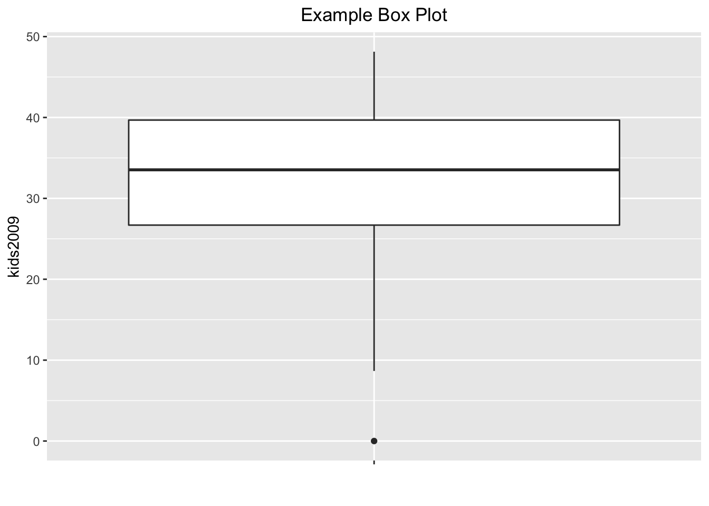
Next, we want to give the box plot a color, as in GeoDa. This is accomplished with the color (for the outlines) and fill (for the inside of the box) options to geom_boxplot. In addition, we can give the outlier point a different color by means of outlier.color. For example, setting the color to black, with the fill to purple (if we set both to the same color, we can no longer distinguish the median), and the outlier.color to red, we obtain:
base.plt +
geom_boxplot(color="black",fill="purple",outlier.color="red") +
xlab("") +
ggtitle("Example Box Plot") +
theme(plot.title = element_text(hjust=0.5))So far, the box plots do not show the fences, the way they do in GeoDa. This can be remedied, but not quite in the same way as in GeoDa. In ggplot, the fences are drawn at the location of the extreme values, the ymin and ymax we saw before, and not at the location of the fence cut-off values, as in GeoDa. The fences are obtained from the stat_boxplot function, by passing the geom as errorbar. The result is as shown below.
base.plt +
geom_boxplot(color="black",fill="purple",outlier.color="red") +
stat_boxplot(geom="errorbar") +
xlab("") +
ggtitle("Example Box Plot") +
theme(plot.title = element_text(hjust=0.5))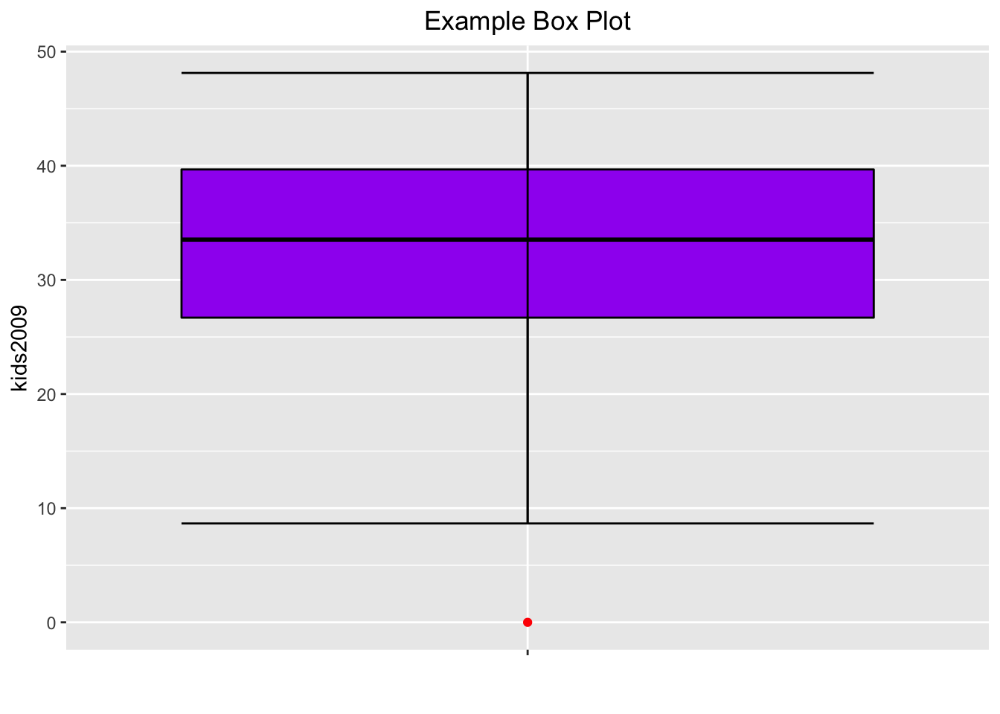
One final refinement. In GeoDa, the box plot also shows the locations of the actual observations as points on the central axis. We obtain the same effect by adding geom_point with color blue. We draw the points first, and the box plot on top of it, using the layers logic. However, we want to make sure that the central box doesn’t mask the points, which it does when the transparency is kept as the default. To accomplish this, we set the alpha level for both points and box plot at 0.5.
The result comes as close to the GeoDa visualization as we can get without going overboard.
base.plt +
geom_point(color="blue",alpha=0.5) +
geom_boxplot(color="black",fill="purple",outlier.color="red",alpha=0.5) +
stat_boxplot(geom="errorbar") +
xlab("") +
ggtitle("Example Box Plot") +
theme(plot.title = element_text(hjust=0.5))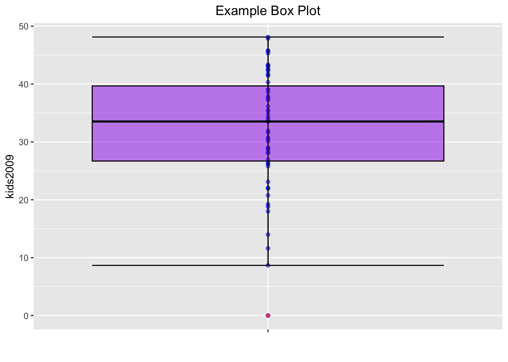
As before, we can write this plot to a file using ggsave, or save the object for future use with saveRDS.
Bivariate Analysis: The Scatter Plot
The scatter plot shows the relationship between two variables as points with (x, y) coordinates matching the value for each variable, one on the x-axis, the other on the y-axis. In ggplot the scatter plot is constructed by means of a geom_point. The aesthetics are mapped to the variables for the x and y axis.
We mimic the example in the GeoDa workbook and use kids2000 for x, and pubast00 for y. The bare bones scatter plot is obtained as follows:
ggplot(data=nyc.data,aes(x=kids2000,y=pubast00)) +
geom_point()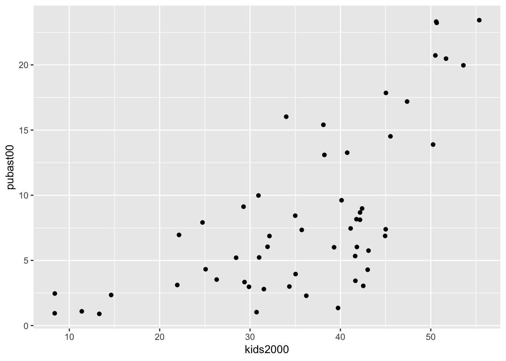
The graph looks slightly different from the one in GeoDa because of a different aspect ratio (the ratio between the scale used for the y-axis to that for the x-axis). In ggplot, the aspect ratio is set as an argument to the coord_fixed command. We can obtain a scatter plot that more closely mimics the shape of the one in GeoDa by setting the aspect ratio to 55/25, i.e., the ratio of the range on the x-axis over the range of the y-axis in the example in the GeoDa workbook (Figure 24).
ggplot(data=nyc.data,aes(x=kids2000,y=pubast00)) +
geom_point() +
coord_fixed(ratio=55.0/25.0)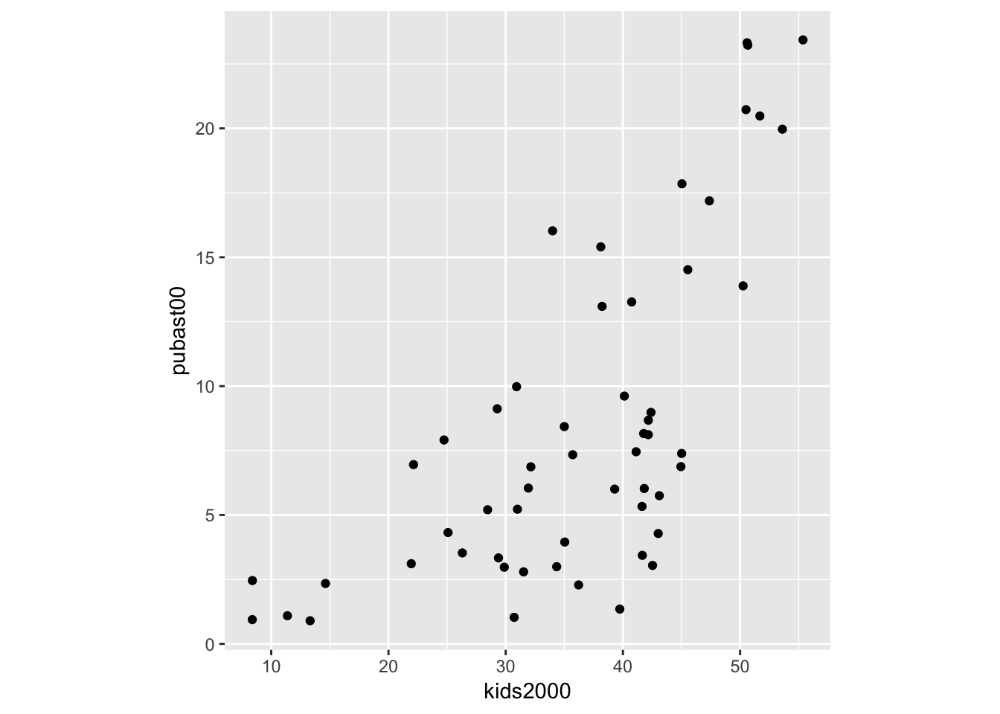
As we saw before, we can customize the graph further with a title and labels, but we will not pursue that here. The main interest is in bringing out the overall pattern of bivariate association by means of a scatter plot smoother, to which we turn next.
Smoothing the scatter plot
Scatter plot smoothers are implemented through the geom_smooth command in ggplot. Options include a linear smoother, as method = lm, and a nonlinear loess smoother, as method = loess. Note that the loess smoother is not quite the same as the LOWESS smoother implemented in GeoDa. The latter is not included in ggplot, but can be implemented by means of the stat_plsmo function from the Hmisc package. We consider each smoother in turn.
Linear smoother
The linear smoother is added to the plot by including the geom_smooth command after the geom_point call. The method is set as lm. In order to better distinguish the fitted line from the points, we set its color to blue, and add a centered title to specify the smoothing algorithm using ggtitle (also, in what follows, we ignore the aspect ratio issue).
ggplot(data=nyc.data,aes(x=kids2000,y=pubast00)) +
geom_point() +
geom_smooth(method=lm, color="blue") +
ggtitle("Linear Smoother") +
theme(plot.title = element_text(hjust=0.5))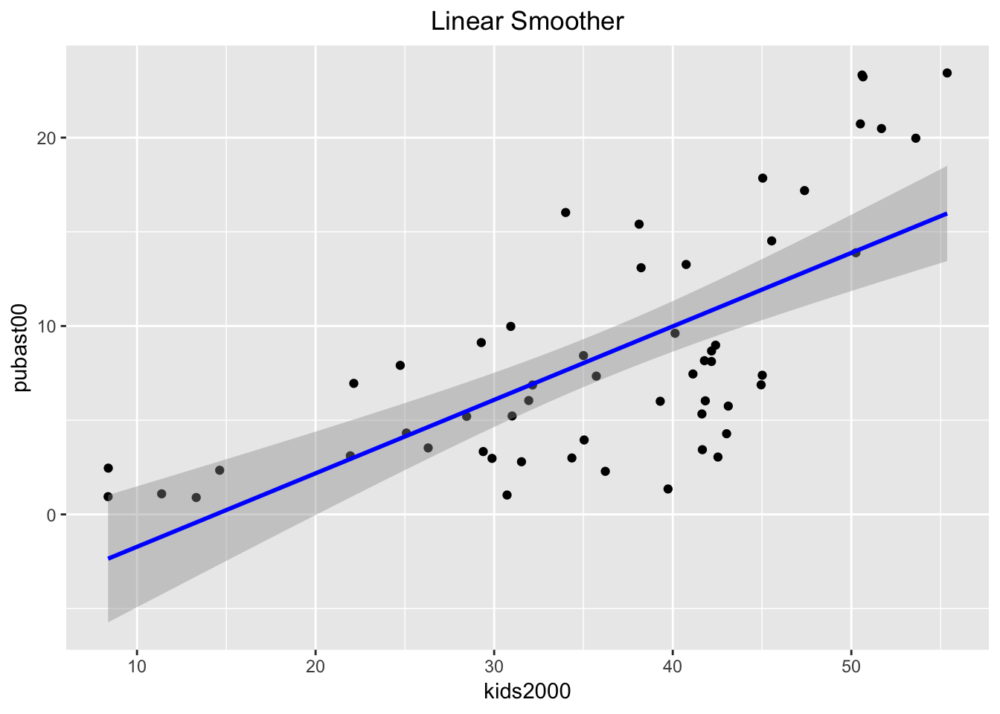
By default, the linear smoother includes a 95% confidence interval band (the grey band around the blue line). To turn this off, we need to set the option se to FALSE, as below.
ggplot(data=nyc.data,aes(x=kids2000,y=pubast00)) +
geom_point() +
geom_smooth(method=lm, color="blue",se=FALSE) +
ggtitle("Linear Smoother") +
theme(plot.title = element_text(hjust=0.5))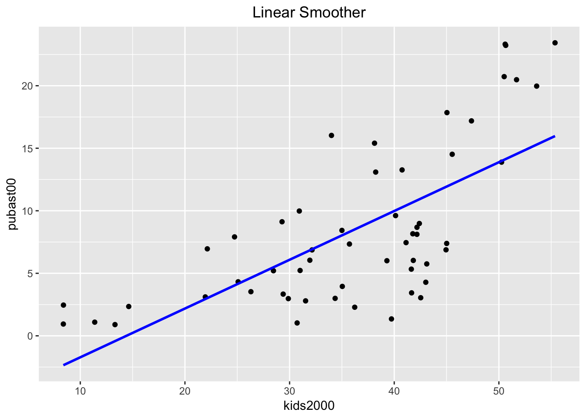
Extracting the linear regression results
In GeoDa, a linear fit to the scatter plot also yields the results of the regression, such as the coefficients, their standard errors, p-values and an R2 measure of fit. This is not the case in ggplot (by design).
However, we can readily obtain these results from the lm function in base R. In its bare minimum, this function takes as arguments a formula and a data set (actually, the latter is not absolutely necessary, depending on how the variables are referred to). In our example, we specify the regression formula as pubast00 ~ kids2000 and the data set as nyc.data.8
Rather than just printing the results of the regression, we assign it to an object, reg1 in our example below. We then apply the summary command to this object, which we assign to yet another object (reg1.sum). When we list the latter, we see a summary of the regression results.
reg1 <- lm(pubast00 ~ kids2000, data=nyc.data)
reg1.sum <- summary(reg1)
reg1.sum##
## Call:
## lm(formula = pubast00 ~ kids2000, data = nyc.data)
##
## Residuals:
## Min 1Q Median 3Q Max
## -8.5284 -3.7925 -0.2762 3.6696 9.2054
##
## Coefficients:
## Estimate Std. Error t value Pr(>|t|)
## (Intercept) -5.61829 2.13013 -2.638 0.0109 *
## kids2000 0.39000 0.05645 6.909 6.32e-09 ***
## ---
## Signif. codes: 0 '***' 0.001 '**' 0.01 '*' 0.05 '.' 0.1 ' ' 1
##
## Residual standard error: 4.682 on 53 degrees of freedom
## Multiple R-squared: 0.4739, Adjusted R-squared: 0.4639
## F-statistic: 47.73 on 1 and 53 DF, p-value: 6.322e-09The reason for taking what may seem like a circuitous route is that the summary object is simply a list of elements that correspond to aspects of the regression result. Of course, one needs to know what these are called, but, in doubt, a str command will reveal the full structure.
str(reg1.sum)## List of 11
## $ call : language lm(formula = pubast00 ~ kids2000, data = nyc.data)
## $ terms :Classes 'terms', 'formula' language pubast00 ~ kids2000
## .. ..- attr(*, "variables")= language list(pubast00, kids2000)
## .. ..- attr(*, "factors")= int [1:2, 1] 0 1
## .. .. ..- attr(*, "dimnames")=List of 2
## .. .. .. ..$ : chr [1:2] "pubast00" "kids2000"
## .. .. .. ..$ : chr "kids2000"
## .. ..- attr(*, "term.labels")= chr "kids2000"
## .. ..- attr(*, "order")= int 1
## .. ..- attr(*, "intercept")= int 1
## .. ..- attr(*, "response")= int 1
## .. ..- attr(*, ".Environment")=<environment: R_GlobalEnv>
## .. ..- attr(*, "predvars")= language list(pubast00, kids2000)
## .. ..- attr(*, "dataClasses")= Named chr [1:2] "numeric" "numeric"
## .. .. ..- attr(*, "names")= chr [1:2] "pubast00" "kids2000"
## $ residuals : Named num [1:55] -3.703 -6.222 -8.528 -0.276 -3.061 ...
## ..- attr(*, "names")= chr [1:55] "1" "2" "3" "4" ...
## $ coefficients : num [1:2, 1:4] -5.6183 0.39 2.1301 0.0564 -2.6375 ...
## ..- attr(*, "dimnames")=List of 2
## .. ..$ : chr [1:2] "(Intercept)" "kids2000"
## .. ..$ : chr [1:4] "Estimate" "Std. Error" "t value" "Pr(>|t|)"
## $ aliased : Named logi [1:2] FALSE FALSE
## ..- attr(*, "names")= chr [1:2] "(Intercept)" "kids2000"
## $ sigma : num 4.68
## $ df : int [1:3] 2 53 2
## $ r.squared : num 0.474
## $ adj.r.squared: num 0.464
## $ fstatistic : Named num [1:3] 47.7 1 53
## ..- attr(*, "names")= chr [1:3] "value" "numdf" "dendf"
## $ cov.unscaled : num [1:2, 1:2] 0.206953 -0.005238 -0.005238 0.000145
## ..- attr(*, "dimnames")=List of 2
## .. ..$ : chr [1:2] "(Intercept)" "kids2000"
## .. ..$ : chr [1:2] "(Intercept)" "kids2000"
## - attr(*, "class")= chr "summary.lm"For example, we see that the coefficients are in the list element coefficients. They can be extracted by means of the standard $ notation.
reg1.sum$coefficients## Estimate Std. Error t value Pr(>|t|)
## (Intercept) -5.6182932 2.13013007 -2.637535 1.093595e-02
## kids2000 0.3899956 0.05644857 6.908866 6.322337e-09Similarly, we can extract the R2 and adjusted R2.
c(reg1.sum$r.squared,reg1.sum$adj.r.squared)## [1] 0.4738536 0.4639263We can now use the text and labeling functionality of ggplot to place these results on the graph. We don’t pursue this any further.
Loess smoother
The default nonlinear smoother in ggplot uses the loess algorithm as a locally weighted regression model. This is similar in spirit to the LOWESS method used in GeoDa, but not the same.9 The implementation is along the same lines as the linear smoother, using geom_smooth, with the only difference that the method is now loess, as shown below.
ggplot(data=nyc.data,aes(x=kids2000,y=pubast00)) +
geom_point() +
geom_smooth(method=loess, color="blue") +
ggtitle("Loess Smoother") +
theme(plot.title = element_text(hjust=0.5))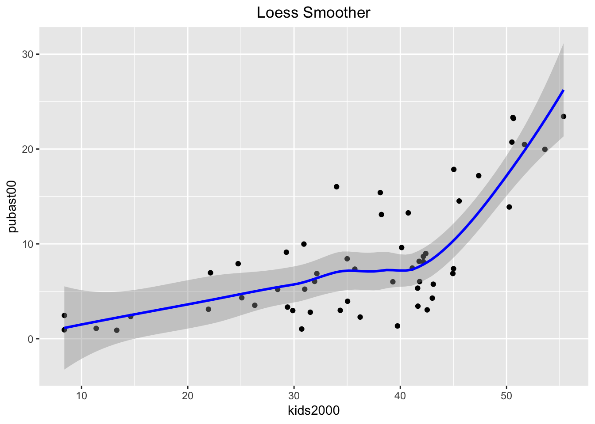
As in any local regression method, an important parameter is how much of the data is used in the local fit, the so-called span. This is typically set to 2/3 of the data by default. A narrower span will yield a smoother that emphasizes local changes. In order to set the span parameter, we use the stat_smooth command. It is in all respects equivalent to geom_smooth, but allows for somewhat more flexibility.
For example, we see the difference between the default and a smoother with a span = 0.4. We also turn off the confidence interval by setting se = FALSE.
ggplot(data=nyc.data,aes(x=kids2000,y=pubast00)) +
stat_smooth(method="loess",span=0.4,color="blue",se=FALSE) +
geom_point() +
ggtitle("Loess Smoother - Span=0.4") +
theme(plot.title = element_text(hjust=0.5))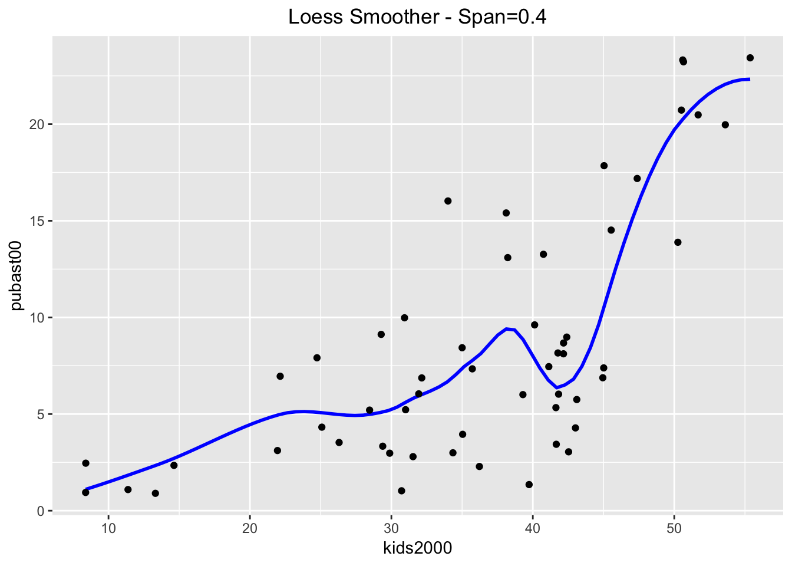
And even more with a span = 0.2.
ggplot(data=nyc.data,aes(x=kids2000,y=pubast00)) +
stat_smooth(method="loess",span=0.2,color="blue",se=FALSE) +
geom_point() +
ggtitle("Loess Smoother - Span=0.2") +
theme(plot.title = element_text(hjust=0.5))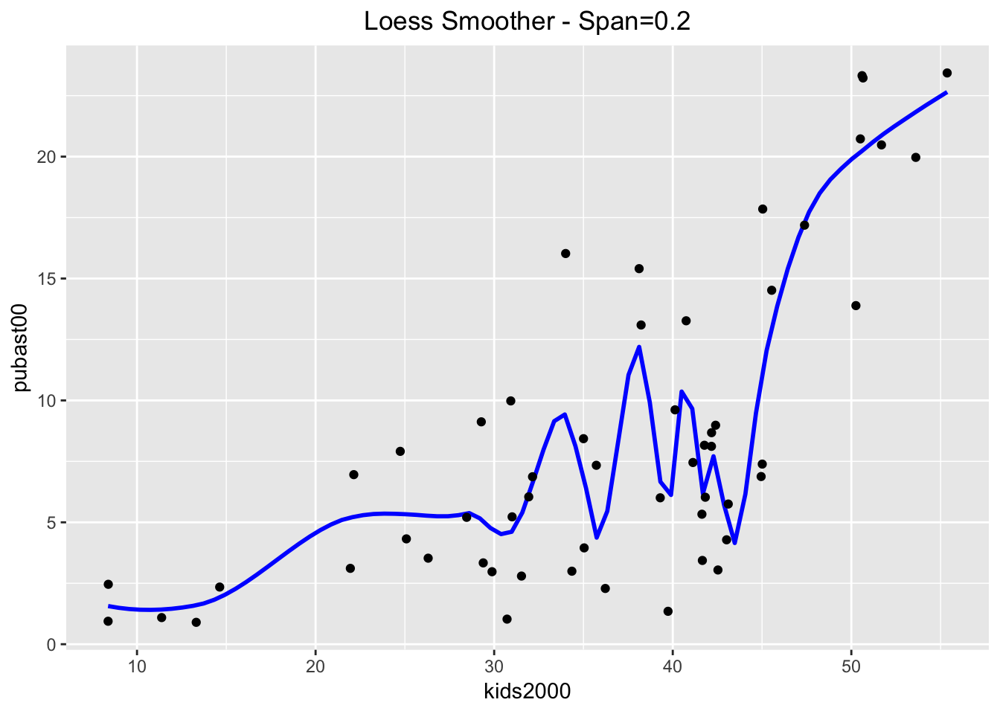
LOWESS smoother
The LOWESS smoother is not implemented in ggplot, but can be found in the Hmisc package. The approach taken illustrates an alternative way to compute a smoother, similar to the stat_smooth function in ggplot. The latter is equivalent to geom_smooth, but allows for non-standard geoms to visualize the results. We won’t pursue that here, but want to point out that this is the spirit in which the function stat_plsmo is implemented. The default is to use a span of 2/3 of the observations (the stat_plsmo command does not have a confidence interval option, so that we do not need to set se).
ggplot(data=nyc.data,aes(x=kids2000,y=pubast00)) +
stat_plsmo(color="blue") +
geom_point() +
ggtitle("LOWESS Smoother") +
theme(plot.title = element_text(hjust=0.5))
When compared to the loess results, we can distinguish minor differences. These become more pronounced when setting the span=0.4.
ggplot(data=nyc.data,aes(x=kids2000,y=pubast00)) +
stat_plsmo(span=0.4,color="blue") +
geom_point() +
ggtitle("LOWESS Smoother - Span=0.4") +
theme(plot.title = element_text(hjust=0.5))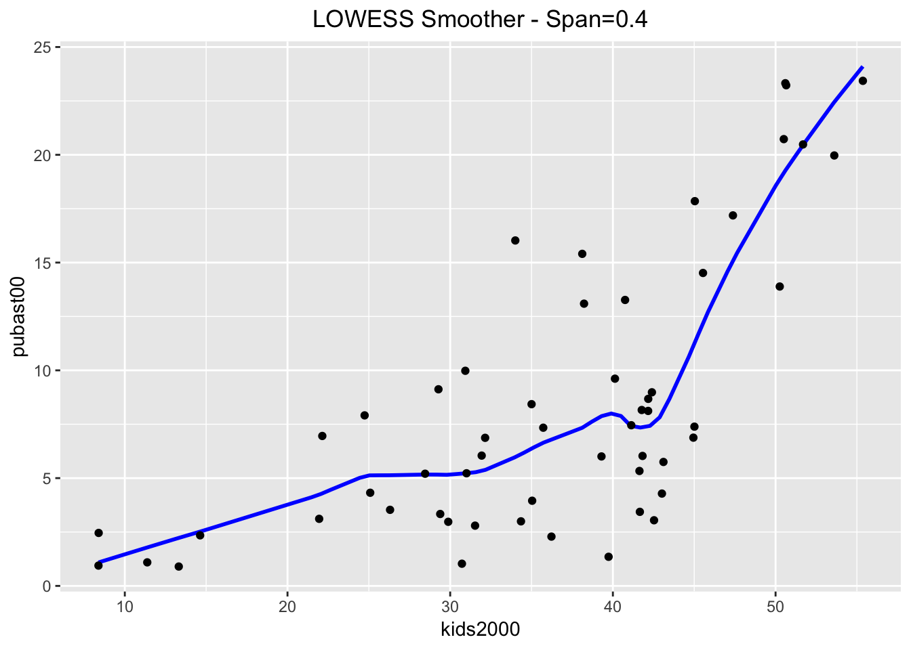
And even more when setting the span=0.2.
ggplot(data=nyc.data,aes(x=kids2000,y=pubast00)) +
stat_plsmo(span=0.2,color="blue") +
geom_point() +
ggtitle("LOWESS Smoother - Span=0.2") +
theme(plot.title = element_text(hjust=0.5))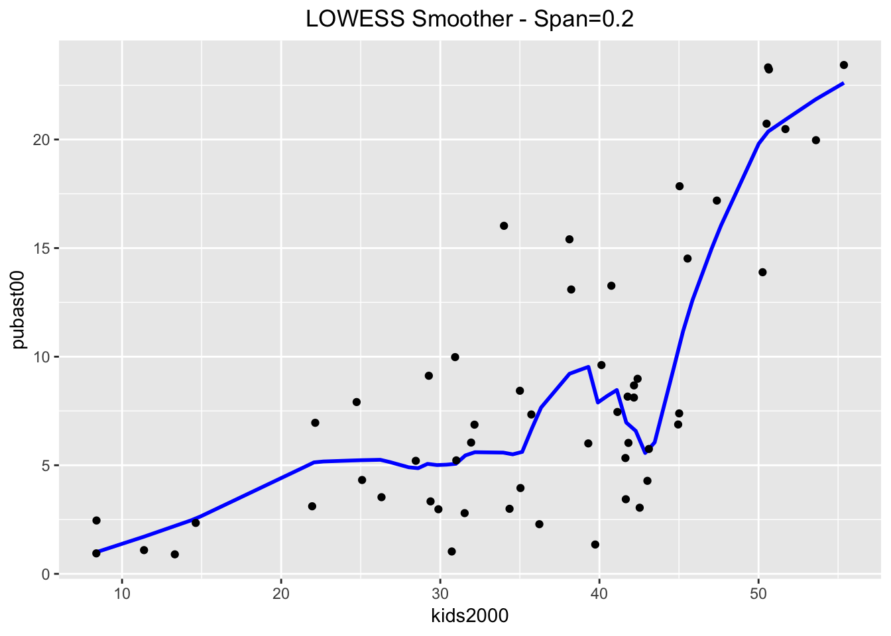
Putting it all together
In GeoDa, it is easy to show both the linear and LOWESS smoother on the same plot. In order to accomplish the same in ggplot, we will use some of the really powerful customization options to create a graph that contains all three smoothing methods. We distinguish between them by setting the color argument in aes to the name of the method, in essence a constant (not a variable).
In other words, the color argument to aes is not set to a variable, where it would take a different color depending on the value of that variable, but to a constant, where the color is fixed. This will yield a different color for each of the methods. In order to highlight the curves themselves, we turn off se for lm and loess. The plot will include a legend by default, showing the color with the name of the method. The default title of the legend will be color, i.e., the argument used to reflect the categories. We override this by means of the labs command (for legend labeling), and set color="Method". The result is as shown below.
ggplot(data=nyc.data,aes(x=kids2000,y=pubast00)) +
stat_plsmo(aes(color="lowess")) +
geom_point() +
geom_smooth(aes(color="lm"),method=lm,se=FALSE) +
geom_smooth(aes(color="loess"),method=loess,se=FALSE) +
ggtitle("Comparison of Smoothing Methods") +
theme(plot.title = element_text(hjust=0.5)) +
labs(color="Method")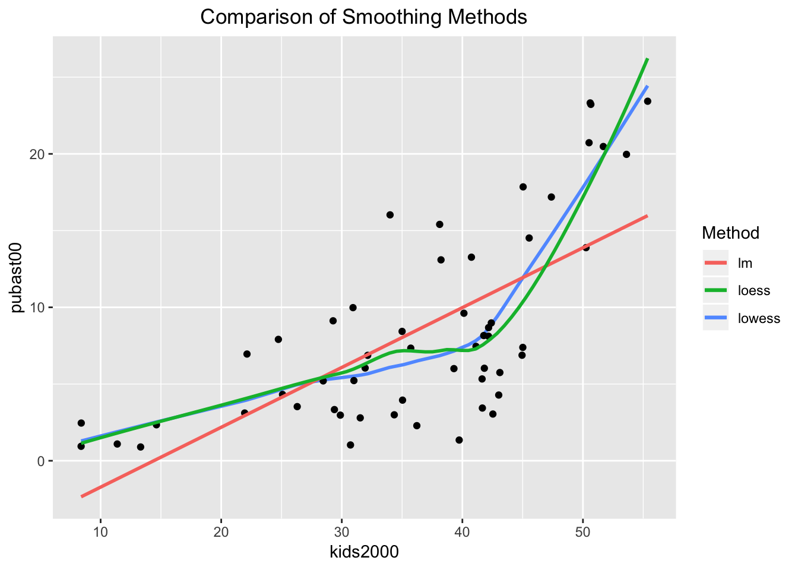
Spatial heterogeneity
In GeoDa, it is relatively straightforward to assess the structural stability of the regression coefficients across selected and unselected observations. The selection can be carried out interactively, from the scatter plot or from any other open view, through linking and brushing. The corresponding regression lines and coefficient information are updated dynamically. In R, this is not (yet) quite possible.
To illustrate the visualization and assessment of spatial heterogeneity, we will assume we have a way to express the selection as a logical statement. As it turns out, the sub-boroughs in Manhattan have a CODE from 301 to 310, and the sub-boroughs in the Bronx have a CODE from 101 to 110. While this is not exactly the example given in the GeoDa workbook, it is easy enough to replicate.
We will proceed by using the mutate command to create a new variable manbronx that matches this selection. For all practical purposes, this gives the same result as if we had selected these observations in a map. Then we will use this classification to create a scatterplot with a separate regression line for the selected and unselected observations, as well as for all the observations, mimicking the behavior of GeoDa (but in a static fashion).
Structural breaks in the scatter plot
The first step in our process is to create the new variable manbronx using mutate. We also use the if_else command from dplyr to create values for the new variable of Select when the condition is true, and Rest when the condition is false. The condition checks whether the values for CODE are between 300 and 311 (using the symbol & for the logical and), or (using the symbol |) between 100 and 111, the codes for Manhattan and the Bronx. As a check, we list the values for our new variable (since there are only 55 observations, this is not too onerous).
nyc.data <- nyc.data %>% mutate(manbronx = if_else((CODE > 300 & CODE < 311) | (CODE > 100 & CODE < 111),"Select","Rest"))
nyc.data$manbronx## [1] "Rest" "Rest" "Rest" "Rest" "Rest" "Rest" "Rest"
## [8] "Rest" "Rest" "Rest" "Rest" "Rest" "Rest" "Rest"
## [15] "Rest" "Rest" "Rest" "Select" "Select" "Select" "Select"
## [22] "Select" "Select" "Select" "Select" "Select" "Select" "Select"
## [29] "Select" "Select" "Select" "Select" "Select" "Select" "Select"
## [36] "Select" "Select" "Rest" "Rest" "Rest" "Rest" "Rest"
## [43] "Rest" "Rest" "Rest" "Rest" "Rest" "Rest" "Rest"
## [50] "Rest" "Rest" "Rest" "Rest" "Rest" "Rest"Next, we create the plot. There are several new elements that we introduce, highlighting the flexibility of ggplot. First, we set the color of the points to correspond with the two categories in the manbronx variable by specifying aes(color=manbronx) for geom_point (i.e., the aesthetic color is mapped to the values of the variable manbronx). Then, we create two separate linear regression lines, one for each category, again by setting aes(color=manbronx) in the geom_smooth command. In order not to overwhelm the graph, we turn the confidence band off (se=FALSE). To construct a regression line for the full sample, we again use geom_smooth, but now we set the color explicitly to black. Since this is outside the aes setting, the regression line is for the full sample. We next set the colors for selected and unselected observations to red and blue, to match the color code in GeoDa (the default setting will have Rest colored red, and Select blue, which is the opposite of the behavior in GeoDa). To accomplish this, we use scale_color_manual to set the values to blue and red, in this order (unselected comes first, since it matches FALSE in the logical statement). Finally, we use labs as before to specify the title for the legend to Selection, and add a centered title.
Except for the aspect ratio, the result looks like what one would obtain in GeoDa.
ggplot(nyc.data,aes(x=kids2000,y=pubast00)) +
geom_point(aes(color=manbronx)) +
geom_smooth(aes(color=manbronx),method=lm,se=FALSE) +
geom_smooth(method=lm,se=FALSE,color="black") +
scale_color_manual(values=c("blue","red")) +
ggtitle("Spatial Heterogeneity") +
theme(plot.title = element_text(hjust=0.5)) +
labs(color="Selection")
Chow test
In GeoDa, a Chow test on the equality of the regression coefficients between the selected and unselected observations is calculated on the fly and shown at the bottom of the scatter plot. This is not supported by ggplot, but we can run separate regressions for each subset using lm. We can also run the Chow test itself, using the chow.test command from the gap package.
First, we create two subsets from the nyc.data by means of filter, based on the value of the manbronx variable. We call the two resulting subsets nyc.select and nyc.rest. We double check their size (there should be 20 selected observations and 35 unselected ones) using the dim command.
nyc.select <- nyc.data %>% filter(manbronx == "Select")
nyc.rest <- nyc.data %>% filter(manbronx == "Rest")
dim(nyc.select)## [1] 20 35dim(nyc.rest)## [1] 35 35Next, we carry out two separate regressions, one for each subset, and list the results.
reg.select <- lm(pubast00 ~ kids2000,data=nyc.select)
reg.rest <- lm(pubast00 ~ kids2000,data=nyc.rest)
summary(reg.select)##
## Call:
## lm(formula = pubast00 ~ kids2000, data = nyc.select)
##
## Residuals:
## Min 1Q Median 3Q Max
## -7.0486 -1.4829 0.3248 2.0625 4.7156
##
## Coefficients:
## Estimate Std. Error t value Pr(>|t|)
## (Intercept) -4.74763 1.84198 -2.577 0.019 *
## kids2000 0.47225 0.05071 9.313 2.64e-08 ***
## ---
## Signif. codes: 0 '***' 0.001 '**' 0.01 '*' 0.05 '.' 0.1 ' ' 1
##
## Residual standard error: 3.406 on 18 degrees of freedom
## Multiple R-squared: 0.8281, Adjusted R-squared: 0.8186
## F-statistic: 86.73 on 1 and 18 DF, p-value: 2.639e-08summary(reg.rest)##
## Call:
## lm(formula = pubast00 ~ kids2000, data = nyc.rest)
##
## Residuals:
## Min 1Q Median 3Q Max
## -6.4415 -2.8231 -0.3905 1.9686 8.2359
##
## Coefficients:
## Estimate Std. Error t value Pr(>|t|)
## (Intercept) -7.01398 3.33123 -2.106 0.042939 *
## kids2000 0.37260 0.08648 4.308 0.000139 ***
## ---
## Signif. codes: 0 '***' 0.001 '**' 0.01 '*' 0.05 '.' 0.1 ' ' 1
##
## Residual standard error: 3.957 on 33 degrees of freedom
## Multiple R-squared: 0.36, Adjusted R-squared: 0.3406
## F-statistic: 18.56 on 1 and 33 DF, p-value: 0.0001391These values match what we would have obtained in GeoDa with the same observations selected.
Finally, we implement the Chow test as chow.test. We pass the y and x variables for each subset, in turn. Again, the results are the same as what one would have obtained in GeoDa and suggest a significant difference between the slopes of the two regression lines.
chow <- chow.test(nyc.select$pubast00,nyc.select$kids2000,
nyc.rest$pubast00,nyc.rest$kids2000)
chow## F value d.f.1 d.f.2 P value
## 1.534013e+01 2.000000e+00 5.100000e+01 6.082099e-06University of Chicago, Center for Spatial Data Science – anselin@uchicago.edu,morrisonge@uchicago.edu↩
Use
setwd(directorypath)to specify the working directory.↩Use
install.packages(packagename).↩Note that, strictly speaking, the package is ggplot2, i.e., the second iteration of the ggplot package, but the commands use ggplot. From now on, we will use ggplot to refer to both.↩
In order to obtain the frequency on the vertical axis, the y variable needs to be set to
..density.., as inaes(y = ..density..).↩For a fuller technical description, see the GeoDa workbook.↩
This can be checked in GeoDa by selecting the corresponding points and checking their value in the Table.↩
A formula in R is the generic way to specify a functional relationship. The dependent variable is on the left hand side of the ~ sign, with an expression for the explanatory variables on the right hand side. The latter are typically separated by +, but in our example, we only have a bivariate relationship. Also, a constant term is included by default.↩
See the GeoDa workbook for further discussion↩